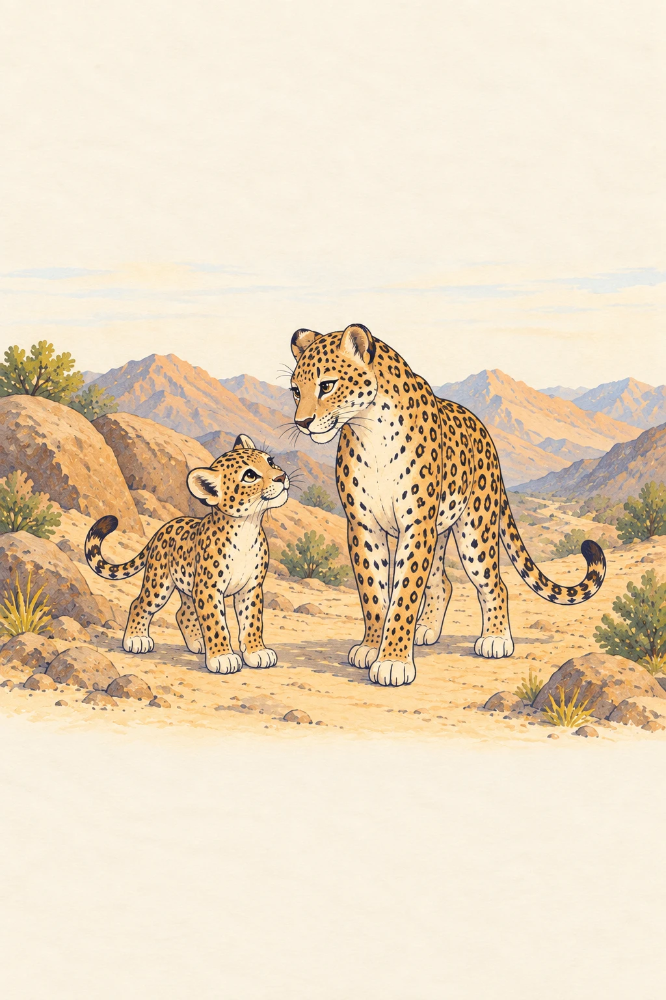

المكتبة
أهلًا في عالم أصدقاء النمر العربي
كل يوم… مغامرة جديدة!
لأصدقاء النمر من ٤–١٨ سنةقابل نمّور
العب بالنمرالجبال
الجبال
تناديك!
اركض، اقفز، واكتشف الطريق إلى المأوى.
ابدأ المغامرة
اقرأ واكتشف
حكايات الأصدقاء

لوّن بخيالك
خيالك… بكل الألوان!
العب على الجوال أو الكمبيوتر
كل مغامرة تقرّبنا من الطبيعة
لعبة واحدة · ٥ مراحل٥ كتب قصصية٤ كتب تلوينمساحات إضافية قيد التطوير
اختر مغامرتك التالية
مساحات تكبر مع فضولك
من الشاشة إلى الورقة
عالم النمر… بألوانك
٤ كتب و٢٨ لوحة، مع غلاف أمامي وخلفي لكل كتاب. لوّن واحفظ رسمتك أو حمّل الكتاب للطباعة!
مساحة المعلم: تقسيمات حسب العمر للأنشطة غير الصفية
للمعلّم والأسرةمغامرة صغيرة… وتعلّم أكبرفكرة لنشاط قصير
نقرأ، نتحدث، ثم نلوّن
اقرؤوا القصة معًا، ثم اسألوا: «ما الأشياء التي يحتاجها النمر في بيته؟» اختاروا صفحة تلوين، واطلبوا من كل طفل أن يحكي كيف نحافظ على موطن النمر.
طباعة سهلة
ورق A4، طباعة على وجه واحد، وإعداد «ملاءمة الصفحة». يمكن اختيار صفحة واحدة لكل طفل. النشاط مناسب لعمر ٧–٩ سنوات.